Plotting
_________________________________________________________________________________
Exercise 1.1
(a)
| > |
plot(2*exp(-t)*sin(30*t),t=-1..5); |
This oscillates and dies away, like the motion of a guitar string after it has been plucked.
(b)
| > |
plot(2*sin(20*t)+3*sin(21*t),t=0..30,numpoints=1000); |
This oscillates rapidly (at the same frequency as 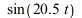
), with the size of the oscillations varying more slowly (like 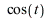
).
(c)
| > |
plot(sin(x)+sin(3*x)/3+sin(5*x)/5+sin(7*x)/7,x=0..20); |
Half the time this wiggles around near 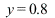
, and half the time it wiggles around near 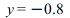
. It jumps quite rapidly between the two levels, and the jumps occur at multiples of  ( and so on).
( and so on).
(d)
| > |
plot(cos(Pi*x^2),x=-5..5); |
The function oscillates between 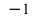
and 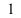
, with the oscillations becoming more and more rapid as the absolute value of  increases.
increases.
_________________________________________________________________________________
Exercise 1.2
| > |
f := (x) -> (x^3-x)*(x^2-4/9)*(x^2-1/9); |
The graph is quite flat and close to zero between  and
and  , crossing the
, crossing the  -axis seven times, at
-axis seven times, at 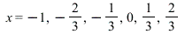
and  . The function increases rapidly towards
. The function increases rapidly towards  for
for 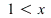
, and drops rapidly towards  for
for 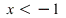
.
| > |
plot(f(x),x=-2..2,-0.5..0.5); |
The rate of growth is similar to  , and in fact
, and in fact  is indistinguishable from
is indistinguishable from  when
when  is reasonably large.
is reasonably large.
| > |
plot([f(x),x^7],x=-3..3); |
| > |
plot([f(x),x^7],x=-10..10); |
To see the reason for this, just expand out  . The leading term is
. The leading term is  , and the remaining terms are multiples of
, and the remaining terms are multiples of 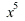
or lower, so they are much smaller than 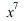
when  is large.
is large.
_________________________________________________________________________________
Exercise 1.3
| > |
g := (x) -> (2*x-3)/(3*x-4); |
(a) Most of the time the graph is very flat, and close to 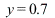
. Somewhere close to 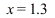
, the graph climbs steeply to , jumps down discontinuously to  , and then climbs back up to around
, and then climbs back up to around 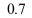
again.
| > |
plot(g(x),x=-10..10,-10..10,numpoints=1000,discont=true); |
| > |
plot(g(x),x=-20..20,0..2,axes=boxed); |
| > |
plot(g(x),x=1..2,-2..4); |
(b) The function is discontinuous at the point where the formula 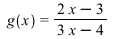
involves division by zero, which means 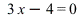
or in other words 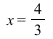
. This can be found graphically as the point where the vertical line crosses the axis in the picture above. Alternatively:
Here we replot the graph, skipping over the discontinuity:
| > |
plot(g(x),x=-3..5,-10..10,discont=true); |
(c)
| > |
plot([g(x),5],x=0..3,-10..10,discont=true); |
This picture shows that the graph does not cross the line 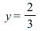
| > |
plot([g(x),2/3],x=-20..20,0..1,discont=true); |
To see this algebraically, we first find the general formula for the point where the curve crosses the line 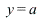
:
The formula involves division by zero when 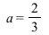
, indicating that the curve does not in fact cross the line  .
.
(d)
| > |
limit(g(x),x=infinity); |
| > |
limit(g(x),x=-infinity); |
 |
(7) |
This is of course the same answer as in (c). As  approaches
approaches  , the function
, the function  approaches
approaches  from below, but never reaches it. As
from below, but never reaches it. As  approaches
approaches  , the function approaches
, the function approaches  from above, but again never reaches it.
from above, but again never reaches it.
_________________________________________________________________________________
Exercise 1.4
| > |
f := (x)->(1-exp(x)+exp(2*x)-exp(3*x))/sin(x); |
| Error, (in f) numeric exception: division by zero |
|
Although the formula for  does not make sense when
does not make sense when  , the only reasonable definition is
, the only reasonable definition is 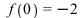
, as we see from the graph. Here is a non-graphical way to get Maple to produce this answer:
_________________________________________________________________________________
Exercise 1.5
The Bessel function is even (ie 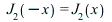
). It oscillates quite regularly, with amplitude decreasing slowly as  approaches
approaches  or
or  .
.
| > |
plot(BesselJ(2,x),x=-50..50); |
For small  , the function
, the function 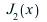
is very close to 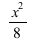
.
| > |
plot([BesselJ(2,x),x^2/5],x=-0.1..0.1); |
| > |
plot([BesselJ(2,x),x^2/8],x=-0.1..0.1); |
This plot has glitches because Maple has not calculated enough points.
| > |
plot(BesselJ(2,x),x=10..300); |
We can cure this with the numpoints option.
| > |
plot(BesselJ(2,x),x=10..300,numpoints=200); |
Here are several attempts to find the 'envelope' of the graph. The final attempt is , which fits very nicely with the peaks of the waves.
| > |
display(pic,plot(6*x^(-1),x=10..300,colour=blue)); |
| > |
display(pic,plot(0.3*x^(-1/3),x=10..300,colour=blue)); |
| > |
display(pic,plot(0.5*x^(-1/2),x=10..300,colour=blue)); |
| > |
display(pic,plot(0.8*x^(-1/2),x=10..300,colour=blue)); |
This plot shows that ;](images03/lab_sols03_90.gif) has (to a very good approximation) the same frequency as .
has (to a very good approximation) the same frequency as .
| > |
plot([BesselJ(2,x),sin(x+Pi/4)],x=10..100); |
By combining the above results, we see that the following function should be a good approximation to ;](images03/lab_sols03_93.gif) for large
for large  . The plot below shows this graphically.
. The plot below shows this graphically.
| > |
f := (x) -> -4*sin(x+Pi/4)/(5*sqrt(x)); |
| > |
plot([BesselJ(2,x),f(x)],x=1..100); |
_________________________________________________________________________________
Exercise 1.6
| > |
g := (a,x) -> (x-1-sin(a/4))*(x-1-cos(a/4))*
(x+1-sin(a/4))*(x+1-cos(a/4))/(1+x^4); |
(a) The graph approaches very closely when  is very large (positive or negative). Close to
is very large (positive or negative). Close to  it climbs quickly to about , then drops very quickly to about
it climbs quickly to about , then drops very quickly to about  , then climbs again to just below
, then climbs again to just below  . The graphs for and look very similar on this scale.
. The graphs for and look very similar on this scale.
| > |
plot(g(2,x),x=-500..500); |
| > |
plot(g(3,x),x=-500..500); |
| > |
plot([g(4,x),1],x=-500..500); |
(b)
| > |
plot(g(3,x),x=-0.4..-0.2,-0.01..0,numpoints=1000); |
It works out that the graph of stays above the  -axis, just touching it in two places. We first show this graphically:
-axis, just touching it in two places. We first show this graphically:
We now zoom in to the first point where the curve touches the axis:
| > |
plot(g(Pi,x),x=-.292899..-.292885,-1e-10..1e-10,numpoints=1000); |
To see why this works algebraically, note that and . Putting this in the definition of gives the following:
As the square or fourth power of any real number is nonnegative, this formula shows that for all  .
.
(c) It turns out that . To see this graphically, compare the two plots below.
| > |
plot(1-8*g(a,0),a=-10..10); |
| > |
plot(cos(a),a=-10..10); |
However, Maple's simplification commands are not clever enough to work this out:
If we give Maple a hint by asking it to simplify instead, it does succeed in working out that this is zero:
| > |
simplify(1-8*g(a,0)-cos(a)); |
 |
(15) |
Here is a trick that persuades Maple to convert to . It is based on De Moivre's Theorem, which will be covered in the course on complex numbers.
| > |
simplify(convert(1-8*g(a,0),exp)); |
To do this simplification by hand, note that , which is the same as . Similarly, we have . Putting these together, we see that , which is the same as . Using the standard formula , this simplifies to . We can then use the standard formula to deduce that  .
.
(d)
| > |
plot(g(a,0.5),a=-40..40); |
| > |
slope := diff(g(a,0.5),a); |
One of the tall peaks is at  .
.
 |
(18) |
The others are at and .
(e)
| > |
plot3d(g(a,x),a=-20..20,x=-15..15,
axes=boxed,grid=[100,100]); |